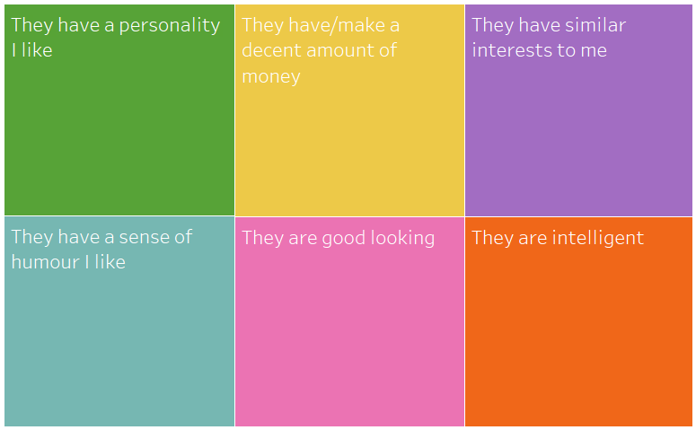
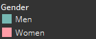
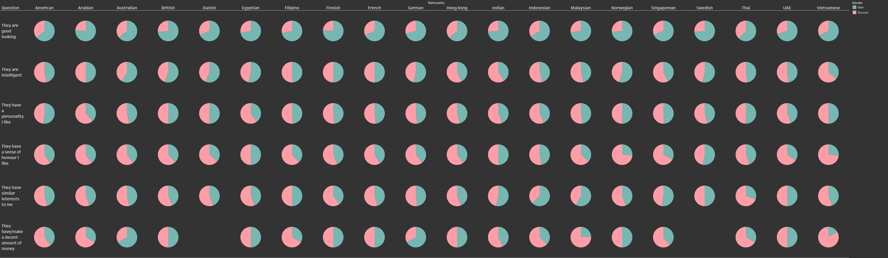
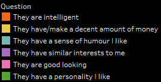
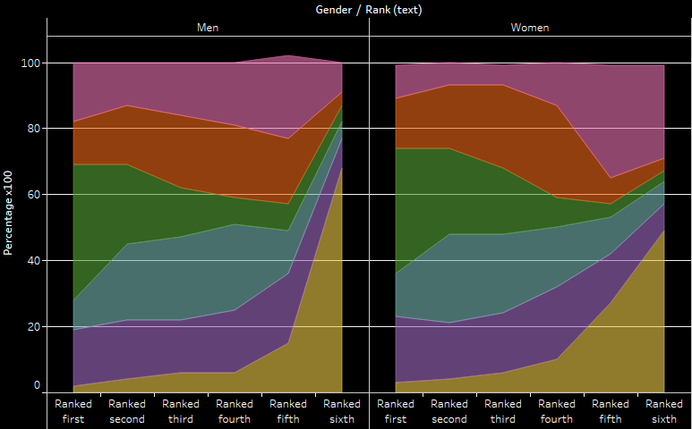
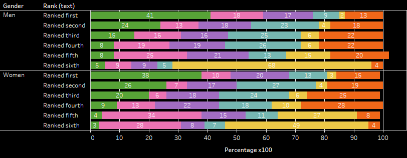
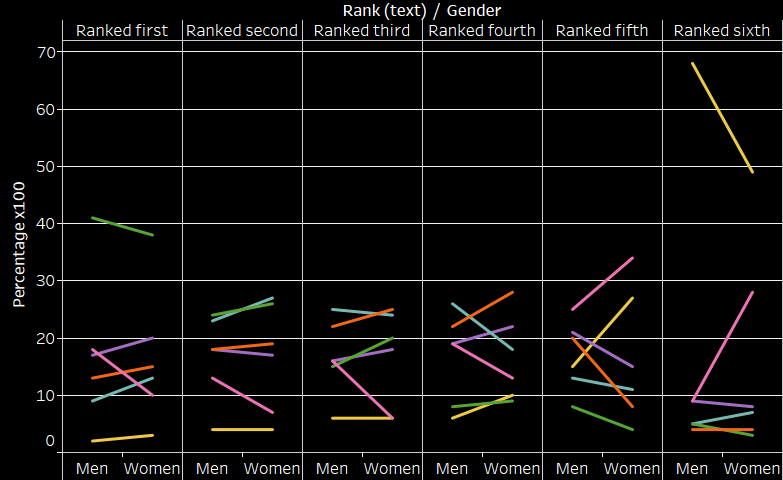

The Uncertainty of Attraction
Around the World
The series of visualizations below were created during the exploration of a dataset that contained information regarding how individuals from countries around the world ranked the following 6 questions when asked about the qualities they value when looking for a partner:
The first series of visualizations was a mapping exercise performed in order to determine which question was ranked first by the highest percentage of men and women around the world. Although, the majority of men ranked personality as a characteristic they value most there was more variety in Men's preferences as compared to women's. The fill of each country corresponds to the color codes in the visual above.

Men and Women
The next visual shows a series of pie charts that compares percentages in an attempt to highlight gender or cultural differences centered around how men and women across various nationalities ranked their most preffered trait. This view was filtered for questions that were ranked first or most preferred among participants in each country.
 American Men and Women Area Chart
The area chart below depicts the preferences of American men and women dependent on how they ranked these six traits.
 American Men and Women Bar Chart
The stacked bar chart below shows the percentage breakdown of how each characteristic was ranked amongst American Men and Women.
American Men and Women Abstract Line Chart
The visualization below shows the difference between how American Men and Women ranked each of the questions through a series of line symbols.
